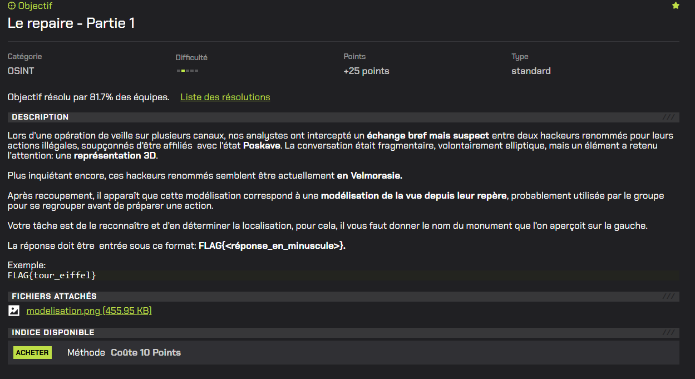
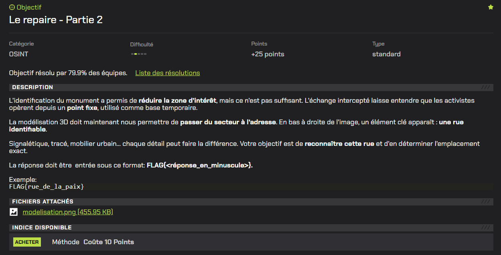
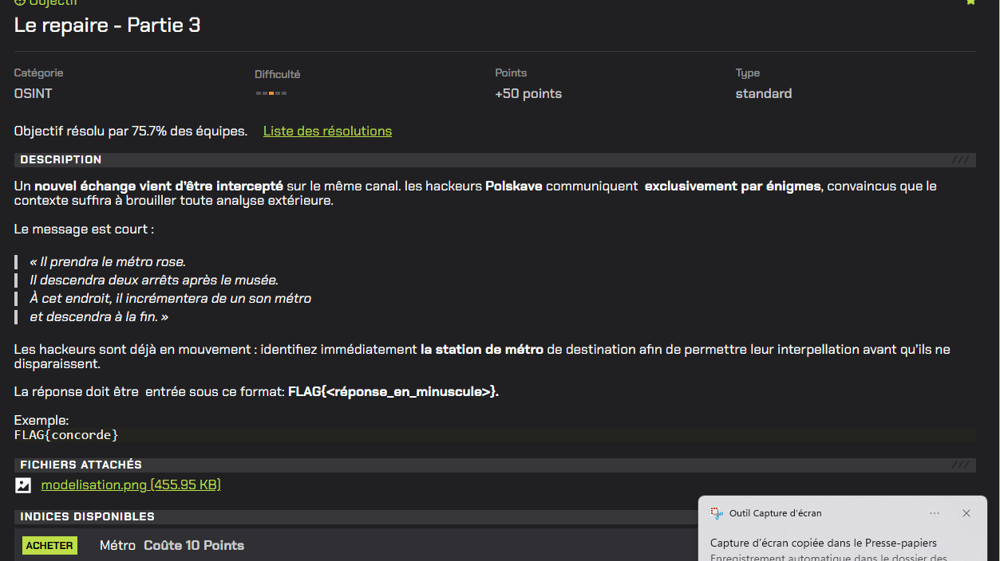
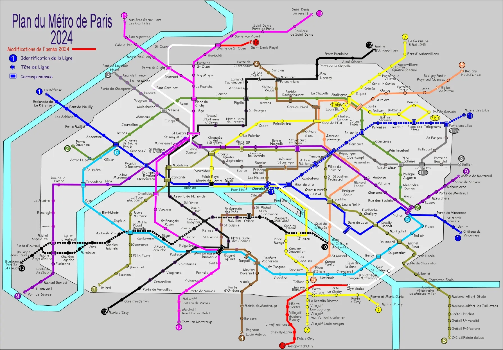

Problematique 1 - Challenge n°1 : La traque partie 1
Enonce / Descriptif
Dans cet exercice, nous devions retrouver le trigramme de l'aéroport ainsi que le numéro de piste de l'avion qui décolle.
Resolution
- Observation de la vidéo du décollage.
- Identification des bâtiments visibles.
- Reconnaissance de la ville de Las Vegas.
- Analyse de l’angle de la piste et test de plusieurs pistes possibles.
Captures d'ecran commentees

Problematique 2 - Challenge n°2 : La traque partie 2
Enonce / Descriptif
Dans cet exercice, nous devions trouver le trigramme de l'aéroport d'arrivée et le numéro de siège du passager suivi.
Resolution
- Analyse de l’image montrant la direction de l’avion.
- Observation d’une trajectoire à 30° vers le nord depuis Las Vegas.
- Recherche des vols correspondants.
- Analyse du modèle d’avion pour déduire la position du siège.
Captures d'ecran commentees
.jpg)
Problematique 3 - Challenge n°3 : Le repaire partie 1
Enonce / Descriptif
Dans cet exercice, nous devions identifier le monument visible sur l’image.
Resolution
- Observation de l’image.
- Reconnaissance du monument grâce à nos connaissances.
- Identification du Panthéon.
Captures d'ecran commentees


Problematique 4 - Challenge n°4 : Le repaire partie 2
Enonce / Descriptif
Dans cet exercice, nous devions retrouver le nom de la rue où se situe l'image.
Resolution
- Utilisation de l'image de la partie précédente.
- Recherche du Panthéon sur Google Maps.
- Comparaison de l’angle de vue.
- Identification de la rue correspondante.
Captures d'ecran commentees


Problematique 5 - Challenge n°5
Enonce / Descriptif
Dans cet exercice, nous devions identifier précisément l’emplacement d’une rue à partir d’une image.
Resolution
- Observation des bâtiments et des détails visibles.
- Comparaison avec Google Maps.
- Analyse de l’environnement urbain.
- Identification de l’emplacement exact.
Captures d'ecran commentees

